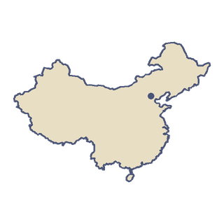

China
China reaches from the Himalayas to the Pacific. It is wide enough to span about five time zones, yet since 1949 the whole country has run on one clock: Beijing time.
“I'd thank Cai Lun for the paper in my plane.”
- Around AD 105 a court official named Cai Lun improved papermaking, using tree bark, hemp, rags and old fishing nets.
- In 2003 China's first astronaut, Yang Liwei, looked for the Great Wall from orbit and said he could not see it.

The land
China covers about 9.6 million km², making it the third-largest country by area. It shares land borders with 14 countries, tied with Russia for the most in the world. The Yangtze is the longest river in Asia and the third-longest in the world, at about 6,300 km. It rises on the Tibetan Plateau and reaches the East China Sea at Shanghai. With more than 1.4 billion people, China is the second most populous country, after India.
Getting around
China has the world's longest high-speed rail network. It stretches more than 50,000 km, about two thirds of the world's total. The high-speed line from Beijing to Shanghai opened in June 2011, built for trains running at up to 380 km/h. In 2007 the same trip still took about 10 hours.
Food
Peking duck is a famous dish from Beijing. A recipe for roast duck appears in an imperial kitchen manual from 1330, and the first restaurant to specialise in it, Bianyifang, opened in 1416. Quanjude, founded in 1864, roasts its ducks hanging inside the oven. The duck is carved in front of the guests. Diners dip the crisp skin in sugar and sweet bean sauce, then wrap the meat in thin steamed pancakes with spring onion and cucumber.
The Games
Beijing hosted the Summer Olympics in 2008. When it held the Winter Olympics from 4 to 20 February 2022, it became the first city to host both.
Fly over China.
-


 City 8 of 15
City 8 of 15Beijing
The Temple of Heaven
“The round blue roofs are just like my book, only bluer. Nurse Ana's kite would love this sky.”
I'd count the blue roof tiles from above. Its keepers are The Palace Lion and the Xiezhi.
The plane reaches Beijing from Tokyo. Clear it and the map opens the way to Bangkok and Hong Kong.